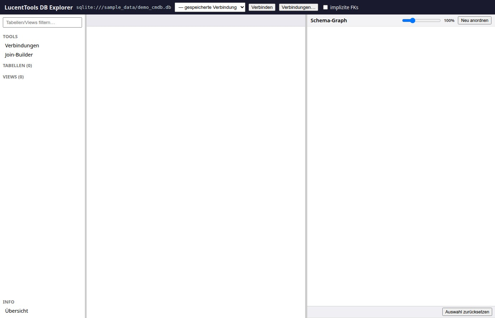
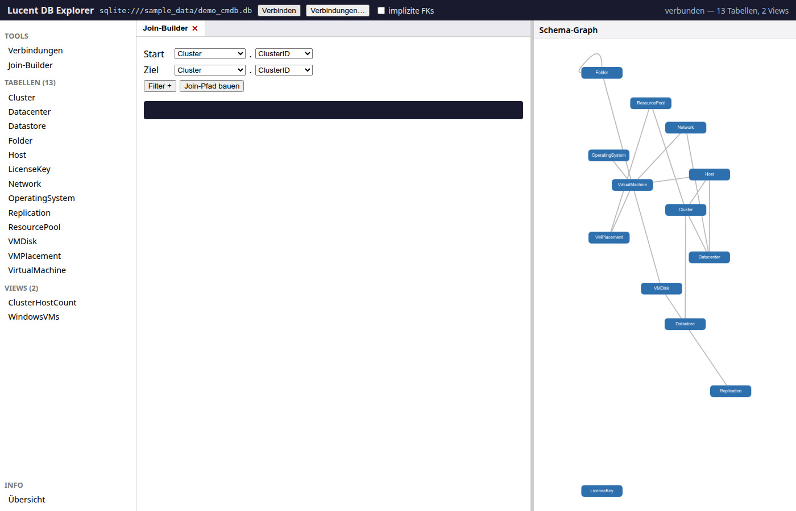
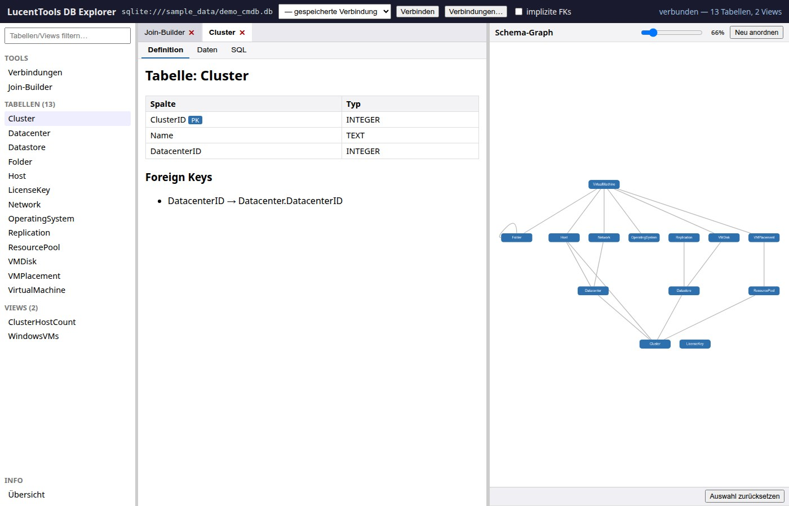
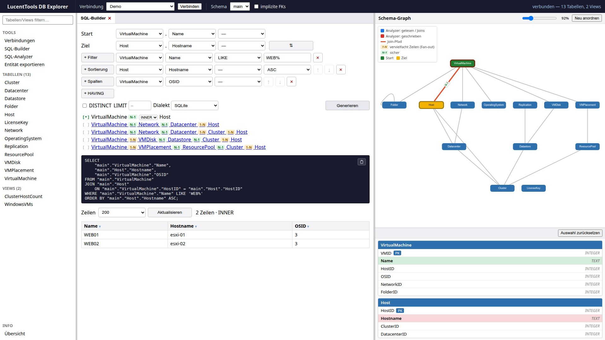
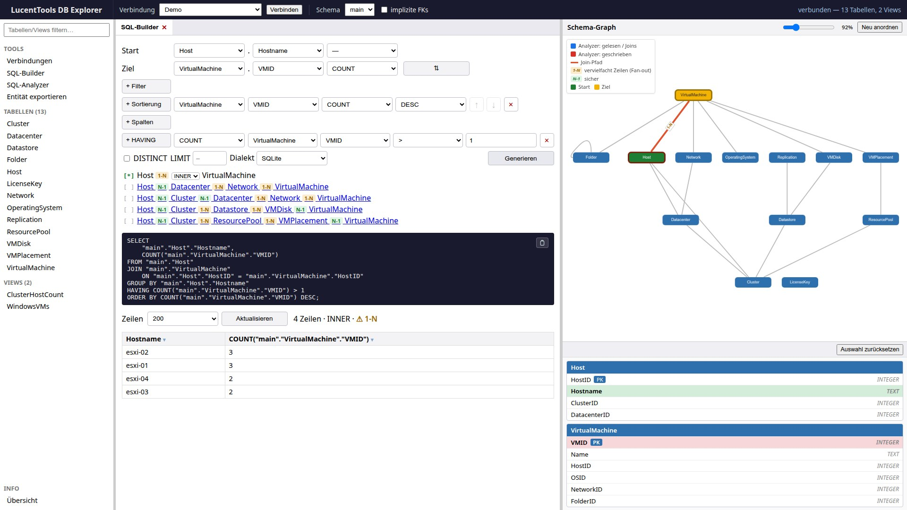
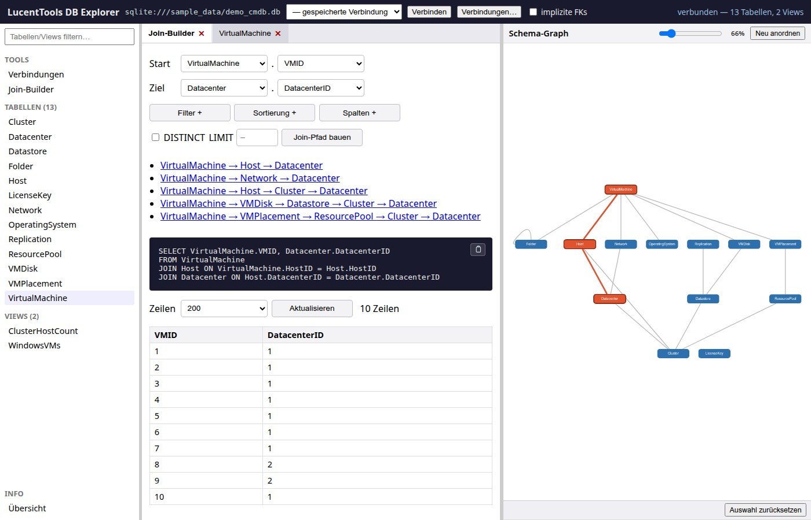
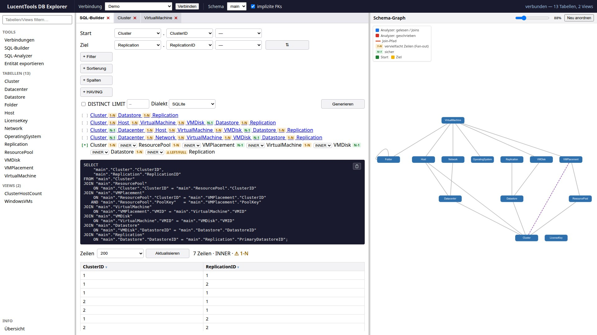
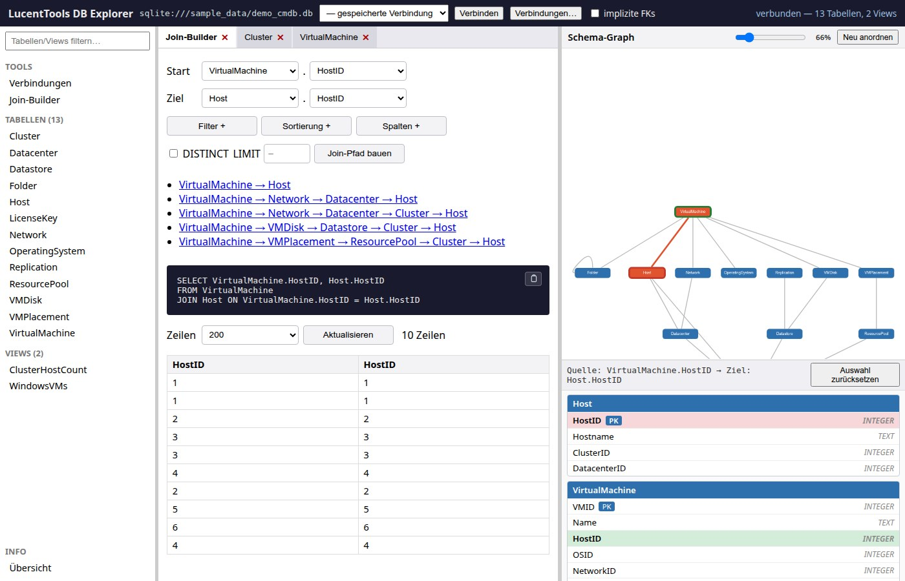

Oberfläche¶
Galerie der wichtigsten Screens — Klick auf ein Bild öffnet die Lightbox-Ansicht (Zoom, Vor/Zurück-Navigation, ESC zum Schließen).
Startscreen — vor der Verbindung¶

Der Startscreen zeigt das 3-Panel-Grundgerüst: Topbar mit Verbindungsfeld und
„Verbinden"-Button, leerer Objekt-Browser links (TABELLEN 0 / VIEWS 0), leeres
Graph-Panel rechts. Das Verbindungsfeld ist mit dem Demo-Datenbankpfad
sqlite:///sample_data/demo_cmdb.db vorbelegt.
Direkt daneben liegt ein Dropdown für gespeicherte Verbindungen (SQL-Developer-typisch): Eine Auswahl daraus verbindet sofort mit der gewählten Verbindung. Das Dropdown ist mit dem Verbindungs-Tab synchronisiert (gleiche Liste, gespiegelte Auswahl); passwortlose Verbindungen (SQLite oder Server ohne Authentifizierung) verbinden direkt, sonst öffnet sich der Verbindungs-Tab vorbefüllt zum Ergänzen des Passworts.
Das Verbindungsformular (Verbindungs-Tab, überarbeitet in AP-64): das Feld
„Name zum Speichern" fluchtet jetzt mit den Feldern darüber. Unter den Feldern
stehen zwei Buttons — „Testen" (links) prüft die Verbindung read-only über
/api/connect und zeigt das Ergebnis in einem Infofeld darunter; bei
Verbindungsfehlern (z. B. unerreichbarer Host) erscheint die echte Treiber-
Fehlermeldung statt einer generischen 500-Antwort. „Speichern" (rechts) legt
die Verbindung in der Verbindungsliste ab. Das Schema laden erfolgt weiterhin
über die Topbar-Verbindungsauswahl (gespeicherte Verbindung auswählen).
3-Panel-Layout nach dem Verbinden¶

Nach „Schema laden" füllen sich Objekt-Browser (13 Tabellen, 2 Views) und der Schema-Graph gleichzeitig. Der SQL-Builder-Tab ist standardmäßig aktiv. Der Graph zeigt alle Tabellen als Knoten und die Foreign-Key-Beziehungen als gerichtete Kanten.
Ein Suchfeld über dem Objekt-Browser filtert die Tabellen-/View-Listen live nach Namen. Die Sidebar-Breite ist über einen linken Splitter per Drag verschiebbar (analog zum Graph-Splitter). Der Button „Neu anordnen" im Graph-Kopf würfelt das Layout neu; bei dichten Schemas vergrößern sich die Knotenabstände automatisch, damit sich Knoten weniger überlappen.
Tabellen-Detail — Sub-Tabs¶

Ein Klick auf eine Tabelle im Objekt-Browser öffnet ein Detail-Tab. Unter Definition stehen Spalten mit Typ und PK-Markierung sowie die deklarierten Foreign Keys. Weitere Sub-Tabs: Daten (erste 100 Zeilen als Tabelle), SQL (DDL-Statement der Tabelle).
SQL-Builder — Pfadliste + SQL-Ergebnis + Graph-Highlight¶
![SQL-Builder: Start Cluster.ClusterID, Ziel Replication.ReplicationID. Mehrere alternative Pfade als anklickbare Liste mit N-1/1-N-Richtungs-Chips; ausgewählt (mit [*] markiert) ist die komplexe 6-Hop-Variante Cluster → ResourcePool → VMPlacement → VirtualMachine → VMDisk → Datastore → Replication. Darunter pro Join-Schritt ein Join-Typ-Dropdown (INNER) mit Waisen-Hinweis LEFT/FULL, das mehrzeilige SELECT (inkl. Composite-Key ON … AND …) und die Ergebnistabelle mit sortierbaren Spaltenköpfen. Im Schema-Graph ist der gesamte Pfad rot hervorgehoben (Start Cluster grün, Ziel Replication), rechts UML-Karten für Start- und Ziel-Tabelle.](../../images/screenshots/Screenshot_04_luDBxP.jpg)
Nach „Generieren" listet der SQL-Builder alle k-kürzesten Pfade (bis zu 5)
als anklickbare Hyperlinks — jeder Schritt trägt einen Richtungs-Chip (grün N-1
aufsteigend / amber 1-N absteigend, kann Zeilen vervielfachen). Der gewählte Pfad ist
mit [*] markiert; hier ist bewusst eine komplexe Mehrhop-Variante ausgewählt.
Der Join-Typ (INNER/LEFT/RIGHT/FULL) ist pro Schritt inline in der aktiven
Pfadzeile wählbar; ein Waisen-Hinweis zeigt, welcher Typ das Ergebnis tatsächlich ändert. Das generierte,
parametrisierte SQL (mehrzeilig, Composite-Keys ausgerichtet) erscheint darunter,
gefolgt von der Ergebnistabelle. Im Schema-Graph werden die beteiligten Tabellen und
Kanten farblich hervorgehoben.
Interaktive Ergebnistabelle (AP-45): Ein Klick auf einen Spaltenkopf öffnet ein Menü mit
Sortieren ASC/DESC, Als Filter… und Spalte entfernen. Sortieren ergänzt eine
Sortierzeile und baut neu, „Als Filter" legt eine vorbefüllte Filterzeile an, „Spalte entfernen"
entfernt Zusatzspalten (Start-/Ziel-Spalten definieren den Pfad und sind geschützt). Sobald ein
Filterwert gesetzt ist (getippt oder aus dem Dropdown gewählt), wird sofort neu gebaut — die
WHERE-Bedingung erscheint umgehend im SQL und im Ergebnis.
Zwei verschiedene „DISTINCT" — nicht verwechseln:
| erscheint im generierten SQL? | Zweck | |
|---|---|---|
DISTINCT-Checkbox (neben LIMIT/Dialekt) |
ja — SELECT DISTINCT … |
doppelte Ergebniszeilen unterdrücken |
Filter-Wertdropdown (/api/distinct) |
nein | Komfort-Lookup: zeigt die echten Werte der Spalte als Auswahlliste |
Das Filter-Wertdropdown ist eine separate Hintergrundabfrage auf eine Tabelle/Spalte
(SELECT DISTINCT col FROM tabelle WHERE col IS NOT NULL ORDER BY col, begrenzt auf
config.DISTINCT_LIMIT). Sie beantwortet nur die Frage „welche Werte gibt es in dieser Spalte?"
und füllt damit die Vorschlagsliste (<datalist>) des Wertfelds. Sie fließt nicht in das
angezeigte/kopierbare Join-SQL ein — dort steht weiterhin nur deine eigentliche Abfrage
(Join + deine Filter). Freitext bleibt jederzeit möglich.
SQL-Builder — Filter, Sortierung & zusätzliche Spalten¶

Die Klausel-Sektionen (Filter, Sortierung, Spalten) wirken zusammen.
Beispiel: Start VirtualMachine.Name, Ziel Host.Hostname, dazu eine Zusatzspalte
(+ Spalten → VirtualMachine.OSID), ein Filter (+ Filter → VirtualMachine.Name
LIKE 'WEB%') und eine Sortierung (+ Sortierung → Host.Hostname ASC). Das erzeugte,
read-only SQL bündelt sie zu mehrspaltigem SELECT + JOIN + WHERE + ORDER BY:
SELECT "main"."VirtualMachine"."Name",
"main"."Host"."Hostname",
"main"."VirtualMachine"."OSID"
FROM "main"."VirtualMachine"
JOIN "main"."Host" ON "main"."VirtualMachine"."HostID" = "main"."Host"."HostID"
WHERE "main"."VirtualMachine"."Name" LIKE 'WEB%'
ORDER BY "main"."Host"."Hostname" ASC;
SQL-Builder — Aggregat mit GROUP BY & HAVING¶

1 und eine Sortierung nach COUNT DESC. Das SQL zeigt die volle Klauselkette SELECT … COUNT(…) … JOIN … GROUP BY … HAVING … ORDER BY; die Ergebnistabelle listet vier Hosts mit mehr als einer VM.">Trägt eine SELECT-Spalte ein Aggregat (COUNT/SUM/AVG/MIN/MAX), wird das GROUP BY
automatisch aus den nicht-aggregierten Spalten abgeleitet. Beispiel „Hosts mit mehr als
einer VM": Start Host.Hostname, Ziel VirtualMachine.VMID mit Aggregat COUNT, eine
HAVING-Bedingung (+ HAVING → COUNT(VMID) > 1) filtert die Gruppen, eine Sortierung
nach COUNT(VMID) DESC ordnet sie. Klauselreihenfolge: WHERE → GROUP BY → HAVING → ORDER BY.
SELECT "main"."Host"."Hostname",
COUNT("main"."VirtualMachine"."VMID")
FROM "main"."Host"
JOIN "main"."VirtualMachine" ON "main"."Host"."HostID" = "main"."VirtualMachine"."HostID"
GROUP BY "main"."Host"."Hostname"
HAVING COUNT("main"."VirtualMachine"."VMID") > 1
ORDER BY COUNT("main"."VirtualMachine"."VMID") DESC;
Der HAVING-Vergleichswert wird für die read-only Vorschau-Ausführung typgerecht gebunden (numerische Werte als Zahl), damit die Gruppenfilterung auch in SQLite korrekt greift.
SQL-Builder — parallele Tab-Ansicht¶

Tabellen-Detail-Tabs und der SQL-Builder-Tab koexistieren in der Tab-Leiste. Mehrere Tabellen können gleichzeitig geöffnet bleiben; ein Klick auf den Tab wechselt die Ansicht ohne den Graph-Zustand zu verlieren.
Schema-Graph mit impliziten FKs¶

Die Checkbox „implizite FKs" in der Topbar aktiviert die SchemaSpy-Heuristik:
Spalten, deren Name auf einen Primärschlüssel einer anderen Tabelle schließen
lässt, werden als gestrichelte Kanten eingezeichnet. Nützlich für Datenbanken
ohne deklarierte Foreign Keys (z. B. demo_cmdb_nofk.db).
AP-1: Interaktive Pfad-Auswahl direkt im Graph¶

Neu in AP-1: Doppelklick auf einen Graph-Knoten öffnet eine UML-Tabellenkarte direkt im Graph-Panel mit allen Spalten, Typen und PK-Markierungen. Eine Spalte anklicken setzt die Quelle; Doppelklick auf eine zweite Tabelle + Spaltenwahl setzt das Ziel. Sobald Quelle und Ziel gesetzt sind:
/api/joinpathwird automatisch aufgerufen- Der Join-Pfad wird im Graph rot hervorgehoben
- Der SQL-Builder-Tab füllt sich automatisch mit den gewählten Tabellen und Spalten (Zweiweg-Sync Graph ↔ SQL-Builder)
Die Statuszeile am unteren Graph-Rand zeigt die aktuelle Auswahl
(Quelle: VirtualMachine.HostID → Ziel: Host.HostID) und bietet einen
„Auswahl zurücksetzen"-Button.
SQL-Builder — aktuelle Funktionen (Stand v0.44.0)¶
Über die obigen Screenshots hinaus bietet der SQL-Builder inzwischen:
- Layout — vier Klausel-Sektionen + Aktionsleiste: Die Klausel-Builder (Filter, Sortierung, Spalten, HAVING) sind als vier eigenständige, immer sichtbare Abschnitte mit beschrifteter Überschrift und je einem kompakten „+"-Button dargestellt. Die Ausgabe-Optionen (DISTINCT, LIMIT, Dialekt) und der „Generieren"-Button befinden sich in einer getrennten Aktionsleiste am unteren Rand. Nur Markup/CSS — alle Element-IDs und das generierte SQL sind unverändert.
- Start ⇄ Ziel tauschen per ⇄-Knopf neben den Ziel-Dropdowns (Tabelle + Spalte; baut sofort neu) — die warnungsfreie Richtung ist oft die umgekehrte.
- Pfad-Auswahl-Indikator: Die Kandidatenpfade tragen
[*](aktiv) /[ ]statt Bullets; jeder Join-Schritt hat einen Richtungs-Chip grünN-1/ gelb1-N. - Join-Typ pro Schritt (INNER/LEFT/RIGHT/FULL): Die Dropdowns sitzen direkt inline in der aktiven Kandidatenpfad-Zeile, neben den Richtungs-Chips. Es gibt keine separate Join-Typ-Zeile mehr. Ein Waisen-Chip zeigt datengetrieben, welcher Typ hier tatsächlich zusätzliche Zeilen bringt (siehe Outer Joins & Waisen).
- Zeilen-Reihenfolge per ↑/↓ (AP-E): Sortier-Zeilen (ORDER BY) und Spalten-Zeilen tragen kleine ↑/↓-Buttons zum Verschieben innerhalb ihrer Sektion. Die Reihenfolge bestimmt die erzeugte SQL: ORDER BY = Sortier-Priorität, Spalten = SELECT-/GROUP-BY- Reihenfolge. Das ↑ der ersten und das ↓ der letzten Zeile sind deaktiviert; das Verschieben wird mit „Generieren" angewandt. WHERE/HAVING haben bewusst kein Move (ihre Reihenfolge ist kosmetisch).
- Lesbares, mehrzeiliges SQL (eine Spalte/JOIN/ON-Bedingung pro Zeile,
ausgerichtete
=); das angezeigte/kopierte SELECT ist direkt lauffähig (Filterwerte eingesetzt, endet mit;) — intern wird parametrisiert read-only ausgeführt. - Ergebnistabelle: Statuszeile Zeilen · Join-Typ · Fan-out; NULL-Zellen (Outer-Join-/Waisen-Zeilen) hervorgehoben.
- Detailkarten: Sind Start/Ziel gewählt (auch per Dropdown), rückt der Graph nach oben und darunter erscheinen die Tabellen-Detailkarten für Start/Ziel; ohne Auswahl bleibt der Graph zentriert.
Schema-Graph — Legende¶
Oben links erklärt eine kleine Legende die Hervorhebungen: blau = Analyzer (gelesen/Joins), rot = Analyzer (geschrieben), orange = Join-Pfad, N-1/1-N = Join-Richtung (N-1 sicher / 1-N kann Zeilen vervielfachen), grün/amber = Start/Ziel. Join-Pfad- und Analyzer-Markierungen sind wechselseitig exklusiv. Die Fan-out-Bedeutung (1-N vervielfacht Zeilen / N-1 sicher) wird in der Legende erklärt; der SQL-Builder zeigt keine separate Fan-out-Kachel mehr.
SQL-Analyzer¶
Der SQL-Analyzer-Tab parst ein eingefügtes Statement read-only (nie
ausgeführt) via sqlglot und zeigt: Typ, Komplexitäts-Score (A–E),
Struktur-Zähler, Spalten, Joins (Typ + ON), Filter/GROUP BY/HAVING/ORDER BY,
gelesene/geschriebene Tabellen sowie Warnungen/Lints (u. a. SELECT *, LIKE '%…',
Funktion-auf-Spalte, sowie SUSPICIOUS_ALIAS für vertippte Join-Schlüsselwörter).
Die JOIN-Kanten des Statements werden im Graph gezeichnet. Mit aktiver Verbindung
zusätzlich UNKNOWN_TABLE/UNKNOWN_COLUMN.
Optimierungs-Vorschläge (AP-F): ein eigener, von den Warnungen getrennter
Abschnitt mit vier schema-freien AST-Heuristiken — überflüssiges DISTINCT neben
GROUP BY, ORDER BY ohne LIMIT, OR im Top-Level-WHERE (kann Indexnutzung
verhindern) und eine Nicht-EXISTS-Unterabfrage in WHERE (oft besser als
JOIN/EXISTS). Read-only, nur Hinweise — der Analyzer schreibt nichts um.
Parse-Fehler-Position (AP-65·A): Kann sqlglot das eingefügte Statement nicht parsen,
zeigt der Analyzer jetzt „Parse-Fehler in Zeile N, Spalte M:" gefolgt von einem
Kontext-Ausschnitt, in dem das fehlerhafte Token rot hervorgehoben ist (.an-err-mark-Span).
Ist keine Position ermittelbar (z. B. leere Eingabe), erscheint weiterhin der reine
Fehlertext. Read-only — keine Autokorrektur.
Unclosed-Quote-Härtung (AP-65·A-Härtung): Ein nicht geschlossenes Anführungszeichen
in einem mehrzeiligen Statement (TokenError, sqlglot konsumiert bis EOF) erhält jetzt
ebenfalls eine Positions-Anzeige: der Scanner _unclosed_quote_offset lokalisiert das
offen gebliebene Anführungszeichen, der Analyzer markiert es mit dem exakten kontextrelativen
Index (parse_error_highlight_pos) statt der alten indexOf-Erstvorkommens-Logik.
Darunter erscheint ein ehrlicher Hinweis-Text (parse_error_hint): bei verschobenen
Anführungszeichen kann die eigentliche Ursache früher im Statement liegen, da sqlglot
die Position nur annähernd ermitteln kann.
Echte Fehlerzeile (AP-65·A-Härtung 2): Statt auf das am Eingabe-Ende offene
Anführungszeichen zu zeigen, findet der reine Helfer _odd_quote_line(sql, quote_char) die
einzige Zeile mit ungerader Anzahl des Quote-Zeichens — die tatsächliche Fehlerzeile — und
der Analyzer leitet die Anzeige dorthin um, sobald sie von der Eingabe-Ende-Zeile abweicht. In
diesem Fall entfällt die Spalten-/Markierungs-Angabe (ein fehlendes Quote hat keine exakte
Position; der Kopf zeigt dann nur „Parse-Fehler in Zeile N:"), und der Hinweis nennt die
vermutete Zeile. Bei mehrdeutiger Zählung (0 oder ≥2 ungerade Zeilen, z. B. ein legitimer
mehrzeiliger String) bleibt das Eingabe-Ende-Verhalten.
Zeilennummern-Gutter (AP-65·B): Das Analyzer-Eingabefeld hat links eine scroll-synchrone
Zeilennummern-Spalte, und bei einem Parse-Fehler wird die Fehlerzeile (parse_error_line)
im Feld farbig hinterlegt. Technisch ein reiner Frontend-3-Schicht-Editor (attachLineGutter):
Gutter · scroll-synchrone Backdrop-Ebene (eine Zeile je logischer Textzeile, Fehlerzeile mit
.an-line-error) · transparente Textarea (wrap="off", bleibt Wert-Träger). Der Highlight wird
bei erfolgreichem Parse oder jeder Eingabe gelöscht; das Feld bleibt vertikal verstellbar. Keine
Editor-Bibliothek (NO-CDN), read-only, kein Backend-Change.
Lints mit Zeilenbezug (AP-65·C): Jede knoten-spezifische Warnung/Empfehlung (SELECT , LIKE
mit führendem '%', Funktion-auf-Spalte, verdächtiger Alias, kartesischer Join, unbekannte
Tabelle/Spalte, OR in WHERE, Unterabfrage in WHERE) beginnt jetzt mit „Zeile N:" und ist
*anklickbar** — ein Klick markiert die zugehörige Zeile im Eingabefeld (rote Markierung des
AP-65·B-Gutters). Meldungen der Statement-Ebene (z. B. WRITE_STATEMENT, NO_WHERE) tragen keine
Zeile und sind nicht klickbar. Die Zeile stammt aus der sqlglot-Token-Position (_node_line);
read-only, kein neues Core-Modul.
Info / Übersicht — Cross-Schema-FK-Diagnose (AP-54)¶
Das Info-Panel (Sidebar → Info → Übersicht) zeigt neben Tabellen-/Views-/FK-Zählern
eine Zeile „Cross-Schema-FKs": die Anzahl der Foreign Keys, die auf ein anderes
Schema als das reflektierte zeigen, und — falls vorhanden — darunter die Kantenliste
Tabelle.Spalte → Schema.Tabelle.Spalte. Damit ist read-only ablesbar, ob die verbundene
Datenbank Cross-Schema-FKs nutzt (Entscheidungsgrundlage für eine spätere volle
Cross-Schema-Join-Unterstützung). SQLite hat keine Schemas → dort immer 0.
Modus „Entität exportieren" — Database-Subsetting (AP-56)¶
Der Tab „Entität exportieren" berechnet aus einer Start-Tabelle und einem optionalen
Wurzel-Filter (Spalte / Operator / Wert) die referenzielle FK-Hülle der Start-Entität:
abhängige Kind-Tabellen werden abwärts verfolgt (Tabellen, die über einen FK auf die
Start-Tabelle zeigen), Lookup-Eltern aufwärts (Tabellen, auf die die Start-Tabelle zeigt) —
„down-then-up" ohne Re-Descent, zyklus-sicher und tiefenbegrenzt. Jede einbezogene Tabelle
erhält eine Rolle (root / child / parent) + via_table-Einstufung.
Auf der berechneten Hülle bietet der Modus vier read-only Aktionen (Buttons):
| Button | Endpoint | Wirkung |
|---|---|---|
| Footprint bauen | /api/subset (AP-56a) |
Hüll-Tabellen + SELECT-Skelett je Tabelle (zur Wurzel gejoint). Führt nichts aus. |
| Zeilen zählen (live) | /api/subset/run (AP-56b·1) |
echte Zeilenzahl je Tabelle + Summe (resilient pro Tabelle; markiert „unvollständig" bei Truncation/Fehler) |
| Daten-Dump (JSON) | /api/subset/dump (AP-56b·2) |
lädt die echten Zeilen der Hülle als JSON-Bundle herunter (Browser-Blob; Per-Tabelle-Cap MAX_RESULT_ROWS + lautes Truncation-Flag) |
| IN-Listen (SQL) | /api/subset/inlists (AP-56c) |
lädt je Tabelle die PK-Identität als .sql herunter (SELECT * … WHERE pk IN (…), Composite-PK als portable (a=… AND b=…) OR …) |
Read-only durchgängig: nichts wird geschrieben; Zähl-/Dump-/IN-Listen-Aktionen führen nur parametrisierte SELECT/COUNT aus. No-PK-Tabellen werden bei den IN-Listen laut markiert.
Read-only Objekt-Kategorien (AP-63)¶
Über Tabellen/Views hinaus zeigt die Oberfläche weitere DB-Objekte read-only an (keine Join-/ SQL-Teilnahme):
- Indizes + Check-Constraints (AP-63·S1): im Tabellen-Detail („Definition") als genestete
Abschnitte — alle Indizes (Name/Spalten,
unique-Badge) und Check-Constraints (Name/Ausdruck). - Trigger (AP-63·S2): eigene Sidebar-Kategorie „Trigger" (nur wenn vorhanden); schlankes
Detail mit besitzender Tabelle +
CREATE TRIGGER-Quelltext, ohne Daten-Tab. Reflektion aktuell nur SQLite (Katalog-SQL). - Sequences + Materialized Views (AP-63·S2b): je eigene Sidebar-Kategorie (nur wenn vorhanden) — Sequenzen zeigen den Namen, Materialized Views Spalten + Definition (display-only). Echte Reflektion nur PostgreSQL/Oracle.
- Prozeduren, Funktionen, Packages, Synonyme (AP-63·S3): vier eigene Sidebar-Kategorien (je nur wenn vorhanden) — jede Routine zeigt ihren Namen + Quelltext, Synonyme ihren Namen + Zielobjekt (display-only, kein Daten-Tab). Echte Reflektion nur PostgreSQL/Oracle/MSSQL; Synonyme nur Oracle. Keine Join-Teilnahme.
- View-Routinen-Referenzen (AP-66·S1): Wenn eine View oder Materialized View Routinen aus
schema.routinesaufruft, erscheint im View-Detail ein Abschnitt „Verwendet Routinen" mit den Namen der referenzierten Routinen. In der Sidebar trägt die betreffende View einƒ-Badge. Migrations-Signal: diese Views sind nicht über reine Join/FK-Lineage migrierbar.
Info / Übersicht — Implizite (geratene) Foreign Keys (AP-55)¶
Das Info-Panel listet zusätzlich die implizit erkannten (geratenen) Foreign Keys mit ihrer Confidence-Stufe (hoch/mittel/niedrig). Jeder Eintrag ist klar als Schätzung markiert — es wird kein FK angelegt und das generierte SQL ändert sich nicht. Die Confidence-Erkennung basiert auf Suffix→Tabellenname-Matching (Groß/Klein-, Trenner- und Plural-normalisiert) gegen Tabellen mit konventionellem Einzel-Spalten-PK.